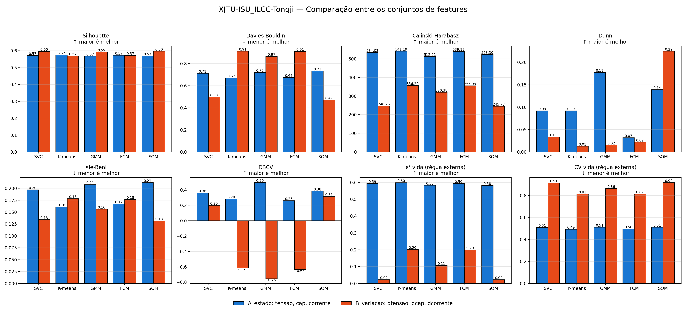
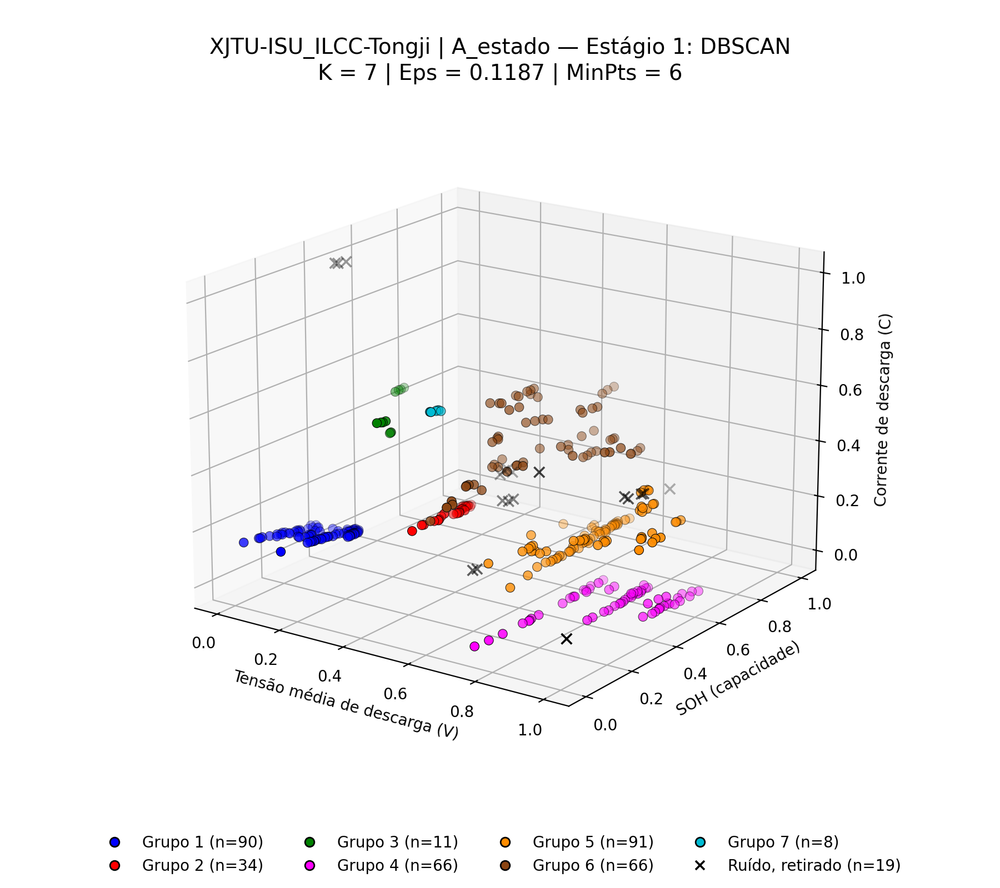
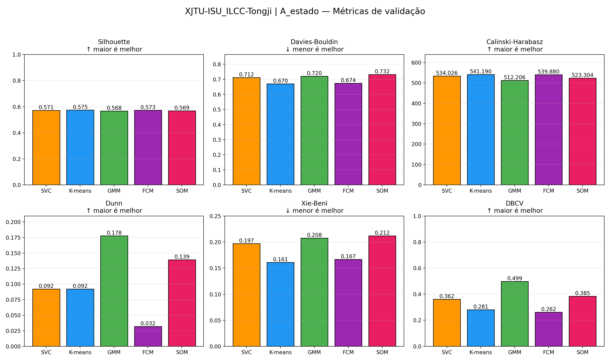
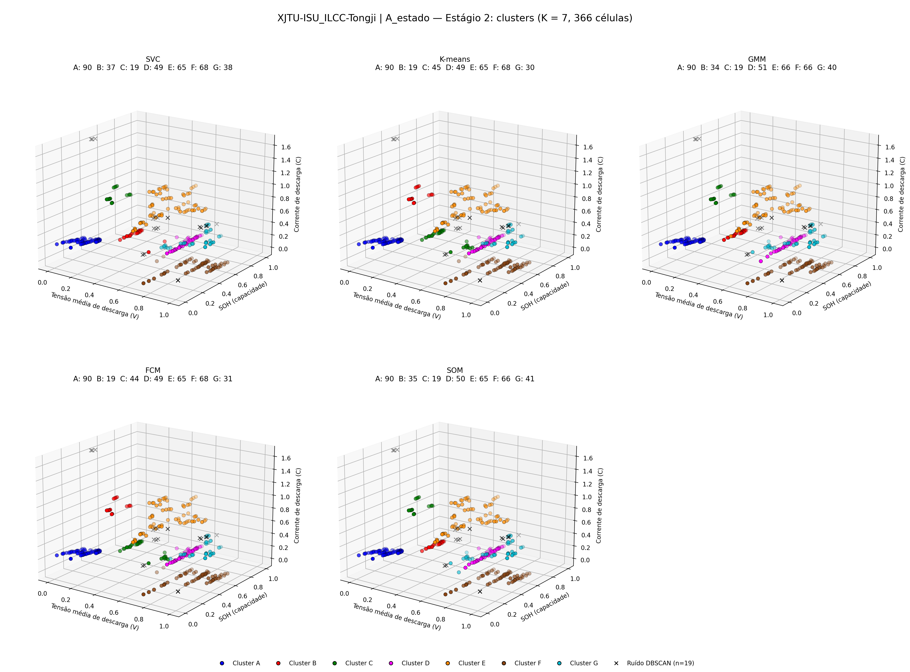
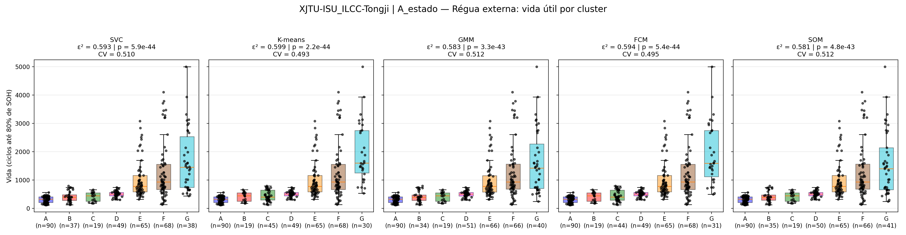
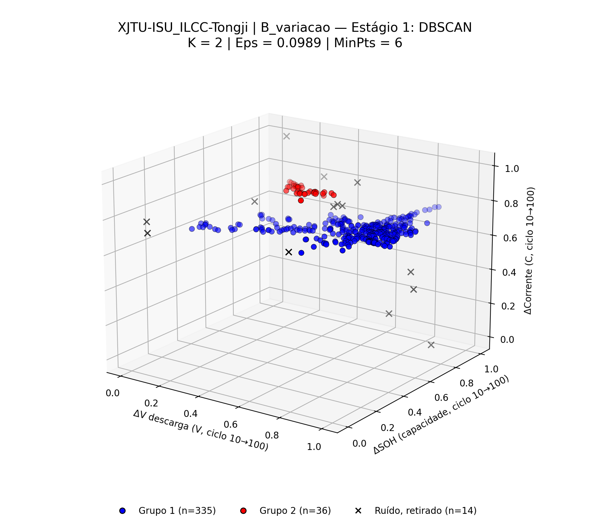
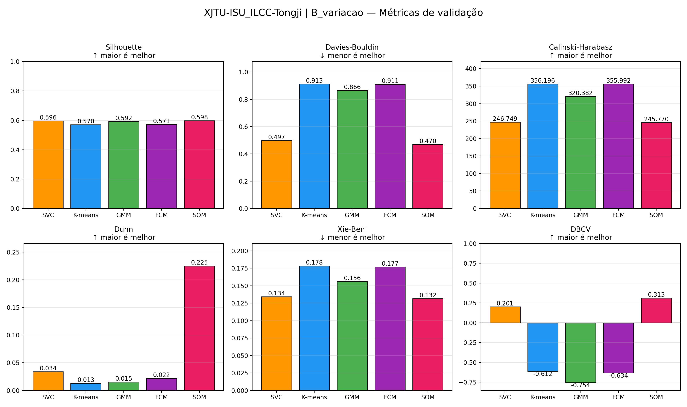
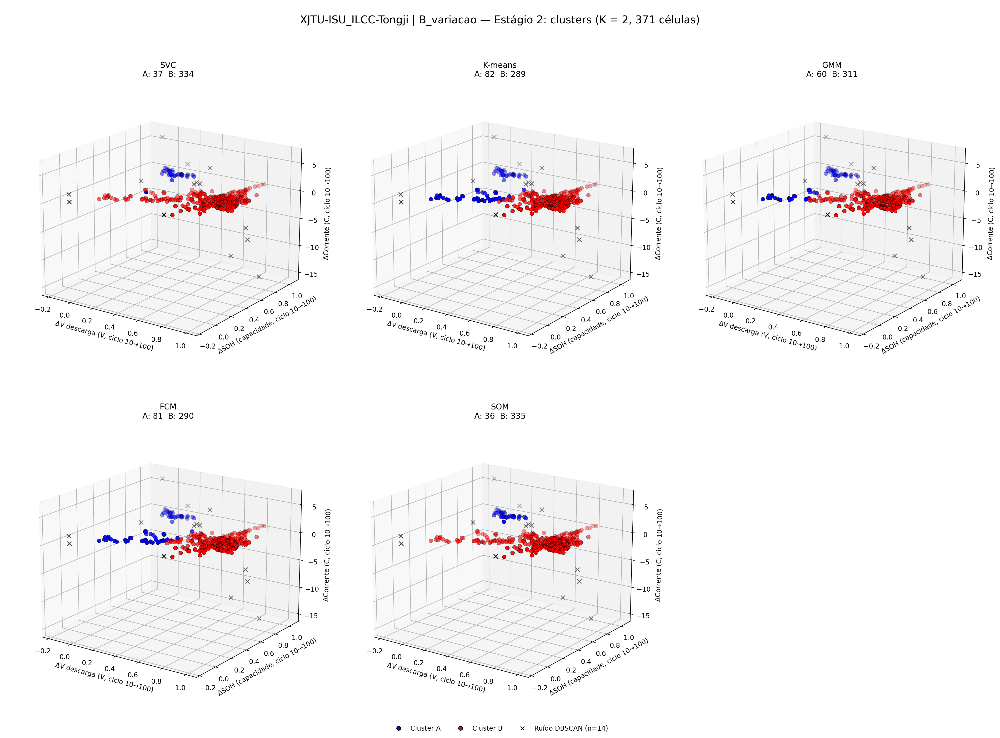
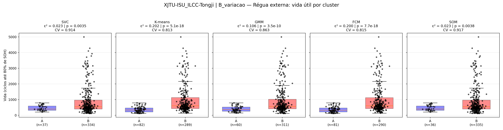

Comparação de conjuntos de features — XJTU-ISU_ILCC-Tongji (BatteryLife), DBSCAN + 5 algoritmos
A_estado: tensao,cap,corrente · B_variacao: dtensao,dcap,dcorrente
ciclos 6–10 e 96–100 · MinPts = 6 · K = do DBSCAN · régua externa: vida útil (ε² do Kruskal-Wallis e CV)
Resumo
| teste | features | células | ruído | células no estágio 2 | K DBSCAN | K usado | Eps | maior silhueta | maior ε² vida | situação |
|---|---|---|---|---|---|---|---|---|---|---|
| A_estado | tensao, cap, corrente | 385 | 19 | 366 | 7 | 7 | 0.1187 | K-means | K-means (0.599) | ok |
| B_variacao | dtensao, dcap, dcorrente | 385 | 14 | 371 | 2 | 2 | 0.0989 | SOM | K-means (0.202) | ok |
Comparação entre os conjuntos

Placar: em quantos algoritmos cada conjunto ganhou cada métrica
| A_estado | B_variacao | |
|---|---|---|
| métrica | ||
| Silhouette | 2 | 3 |
| Davies-Bouldin | 3 | 2 |
| Calinski-Harabasz | 5 | 0 |
| Dunn | 4 | 1 |
| Xie-Beni | 2 | 3 |
| DBCV | 5 | 0 |
| ε² vida | 5 | 0 |
| CV vida | 5 | 0 |
| TOTAL internas | 21 | 9 |
| TOTAL régua da vida | 10 | 0 |
A_estado: tensao, cap, corrente
células: 385 · ruído: 19 · células no estágio 2: 366 · K DBSCAN: 7 · K usado: 7 · Eps: 0.1187 · maior ε² vida: K-means (0.599)
Situação: ok




Tabela de métricas
| Silhouette | Davies-Bouldin | Calinski-Harabasz | Dunn | Xie-Beni | DBCV | ε² vida | p (Kruskal-Wallis) | CV vida | |
|---|---|---|---|---|---|---|---|---|---|
| SVC | 0.5713 | 0.7124 | 534.0260 | 0.0921 | 0.1972 | 0.3616 | 0.5931 | 0.0 | 0.5096 |
| K-means | 0.5747 | 0.6700 | 541.1896 | 0.0921 | 0.1612 | 0.2811 | 0.5986 | 0.0 | 0.4927 |
| GMM | 0.5677 | 0.7204 | 512.2060 | 0.1776 | 0.2079 | 0.4986 | 0.5834 | 0.0 | 0.5116 |
| FCM | 0.5734 | 0.6738 | 539.8795 | 0.0320 | 0.1668 | 0.2620 | 0.5935 | 0.0 | 0.4955 |
| SOM | 0.5691 | 0.7324 | 523.3037 | 0.1391 | 0.2121 | 0.3845 | 0.5813 | 0.0 | 0.5117 |
B_variacao: dtensao, dcap, dcorrente
células: 385 · ruído: 14 · células no estágio 2: 371 · K DBSCAN: 2 · K usado: 2 · Eps: 0.0989 · maior ε² vida: K-means (0.202)
Situação: ok




Tabela de métricas
| Silhouette | Davies-Bouldin | Calinski-Harabasz | Dunn | Xie-Beni | DBCV | ε² vida | p (Kruskal-Wallis) | CV vida | |
|---|---|---|---|---|---|---|---|---|---|
| SVC | 0.5963 | 0.4971 | 246.7487 | 0.0338 | 0.1343 | 0.2012 | 0.0230 | 0.0035 | 0.9143 |
| K-means | 0.5699 | 0.9126 | 356.1964 | 0.0128 | 0.1784 | -0.6124 | 0.2023 | 0.0000 | 0.8129 |
| GMM | 0.5923 | 0.8660 | 320.3823 | 0.0154 | 0.1561 | -0.7537 | 0.1065 | 0.0000 | 0.8628 |
| FCM | 0.5713 | 0.9107 | 355.9915 | 0.0220 | 0.1769 | -0.6342 | 0.2000 | 0.0000 | 0.8155 |
| SOM | 0.5977 | 0.4698 | 245.7696 | 0.2249 | 0.1316 | 0.3133 | 0.0226 | 0.0038 | 0.9167 |